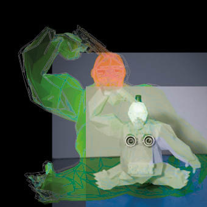

Mundo Gorila
is a multiplatform device to give interactivity to installations. The components that conform it make its production easy to afford very differente shapes, hardware plug-ins, and infinite posibilities. With a full skeleton armature designed in 3d ready to print differente poses, it will be available to make series and to conect its component syncronished in order to make a sorrounding experience.

Mundo Gorila es un simulacro de ficción en el que un gorila es el personaje principal y es el único que saldrá de la virtualidad de este mundo imposible, la figura del gorila estará representando la instalación y sera el totem del dispositivo. La invitación es ha hacerse cargo del destino del gorila, ya que lleva un arma y esta apuntando a su cabeza, pero para que se desenvuelvan los hechos habra que jugar una partida contra el destino, tanto como si se quiere como si no se quiere, la sola presencia de alguien puede activar los sensores que no solo disparan señales electrónicas, podrían estar disparando armas imaginarias que fácilmente podrían estar vinculadas con armas de gatillos metálicos que disparan a sesos de verdad. La capacidad humana esta capacitada para salvar a este gorila y muchas otras cosas, pero en esta prueba veremos si es eso lo que en la intimidad realmente sucede.
La instalación constará de los siguientes elementos: una estatuilla que albergará un arduino para provocar dentro del mismo el disparo de las señales tanto luminosas como sonoras.
The installation consists of the following elements: a statuette that will house an arduino to cause within the same the firing of the signals both luminous and sonorous.
Para esto se requerirán:
-Arduino.
-Detector de ultrasonidos para arduino.
-Altavoces integrados(para dentro del gorila).
-Un diseño de programación de sonido de PureData.
- RGB Leds.
La instalación estará funcionando en todo momento de manera pasiva, únicamente se podrá apreciar un sonido de respiraciones calmadas procedente del interior del gorila. Para activar la instalación solo hará falta activar el sensor de ultrasonidos con la mera presencia. Una vez el sensor se active, el sonido de respiración empezara a acelerar incitando al usuario a que se acerque al dispositivo.
La representación de un gorila creado totalmente de manera artificial supone un intento de sobrepenerse a lo natural. Tratar de crear un organismo “vivo” en el que podemos encontrar algunas de las características de este animal, en las cuales solo nos sorprende el hecho de que aun siendo estatico, la respuesta es sorprendente en cuanto nos acercarmos a lo extraño de esta pieza.
The representation of a gorilla made totally from and artifical source suposse a try to overcome natural boundaries. To achieve a “living” organism in which we can find some of the caractaristics of this animal and within them how we get surprised by the still interactivity of this artwork when approach to it.
Way back